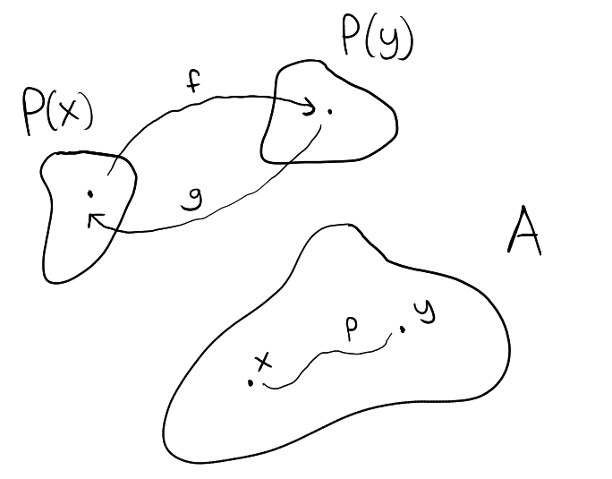
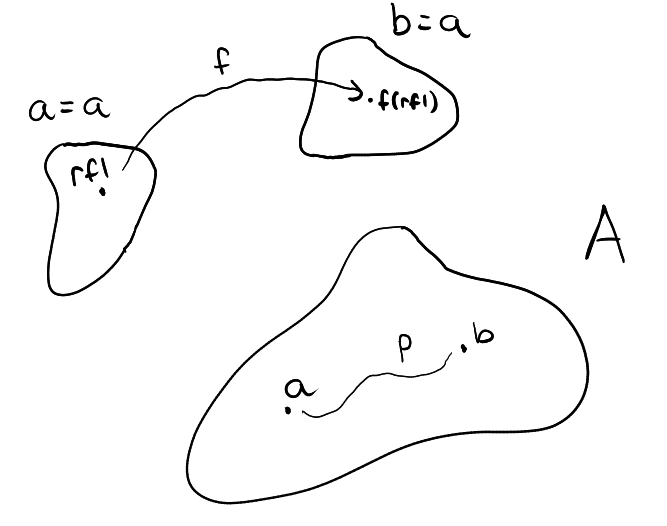

Part 7 - Propositions¶
Across our type theory journey I've been showcasing some connections between type theory and logic. For example: ∏ can be seen as \(\forall\), ∑ as \(\exists\), + as \(\lor\) and so on. In particular, we view types as propositions and propositions as types. This, I feel, is a very beautiful (and more importantly, powerful) interpretation.
Unfortunately, things don't always work out perfectly and the proposition as types interpretation has some flaws which I've thus far hidden. We shall discuss them now and present a solution.
The first flaw¶
If we want to do classical mathematics, it will be helpful to have something akin to the law of excluded middle (LEM). This is an axiom stating that for any proposition \(P\) we have \(P \lor \neg P\). Translating into type theory, this amounts to the existence of a term with the type
∏P:U (P + ¬P), recall ¬P := P → 𝟘
So to introduce LEM into our type system, we just need to make it an axiom that there exists a term of the type above. Problem solved... or not because for reasons beyond my capabilities of understanding, asserting such a term makes the system inconsistent and creates a contradiction.
The second flaw¶
We want proof irrelevance, what that means is there should be no difference between two proofs p,q:P of the same proposition P:Type, i.e, we want p=q, obviously not all types satisfy this condition.
In constructive mathematics, proofs can be different, for example a proof of ∑x:ℕ, x>0 can be either 1:ℕ paired with a proof p1:1>0, or it can be 2:ℕ paired with a proof p2:2>0. In classical mathematics this sort of detail is not important. We can even, if we want to, provide a proof that there exists an x:ℕ such that x>0 without supplying an x:ℕ and a proof of x>0. Of course, what I'm implying is the use of proof by contradiction.
Alas, as it stands right now, a term of ∑x:ℕ, x>0 cannot be constructed via proof by contradiction. Let's imagine we try to do exactly just that. First, we assume the opposite, i.e, that we have a proof p:¬(∑x:ℕ, x>0) and see if we can generate a contradiction (a term of 𝟘) from p. This way a proof by contradiction amounts to constructing a term with type
¬(∑x:ℕ, x>0) → 𝟘 := ¬¬(∑x:ℕ, x>0)
but coming up with a term of ¬¬(∑x:ℕ, x>0) dosen't necessarily mean we have a term of ∑x:ℕ, x>0 unless there is a function
f : ¬¬(∑x:ℕ, x>0) → ∑x:ℕ, x>0
(corresponding to some sort of double negation elimination rule) which is impossible to construct without LEM (and remember we can't assume LEM).
This is not to say that the type
∑x:ℕ, x>0(and other similar types) is not a valid representation of the proposition "there exists anx:ℕsuch thatx>0", but rather∑x:ℕ, x>0represents a "constructive" version of that proposition, i.e, we cannot construct a term of this type via non-constructive methods (proof by contradiction)It is possible to create a "classical" version of
∑x:ℕ, x>0and this is what we will be touching upon.
The solution¶
Definition. Given
A:Type, define\[ \text{IsProp}(\text{A}):=\prod_{x,y:\text{A}}x=y \]we say that
A:Typeis an h-proposition ifIsProp(A)is inhabited.
The definition of IsProp implies that x=y is a type (which shouldn't be a surprise), we'll formally define equality types shortly.
If A:Type is an h-proposition, then we know that any two terms of A are equal. This automatically gives us proof irrelevance. Another way to see this is that A has at most one term.
It turns out that if A:Type is an h-proposition, then LEM works on A, i.e, we can assume that the type
∏A:U, IsProp(A) → (A + ¬A)
is inhabited without any problems. So, as for the solution... what if instead of having a correspondence between propositions and types, we have a correspondence between propositions and some types. By some we of course mean types that are h-propositions.
The equality type¶
The type formation rule is as you would expect:
In particular if a:A and b:B (with distinct A and B) then a=b is nonsense. We can only form an equality relation between two terms of the same type.
The term introduction rule is given by:
This means that for any a:A there is a proof of a=a, namely refl(a):a=a.
The term elimination rule (sometimes called the J-rule) is as follows:
Let A:U. Then, given a dependent type
and a function
there is a function
The computation rule is that
We called C a dependent type, though it isn't in the traditional sense since it accepts three inputs (instead of one) before outputting a type. The first two inputs are terms of A and the third input is a term of a path (equality) between those terms. I.e, given x,y:A and p:x=y we have C(x,y,p):U.
We shall expand our worldview to include/consider instances like the above whenever we mention or deal with dependent types.
Obtaining a term :
is equivalent to showing that C(x,y,p) is inhabited for whatever x,y:A and p:x=y. Indeed, given the terms x,y,p one just has to feed these into f to exhibit a term of C(x,y,p), i.e,
x,y:A, p:x=y, ⊢ f(x,y,p):C(x,y,p)
The elimination rule states that such an f can be obtained by exhibiting a term of type
Judgemental equality¶
You may have noticed that we have introduced equalities many times before, specifically when specifying a computation rule. In those instances the equality is given with the symbol := to distinguish it from the "typal" notion of equality we defined above.
How exactly these two notions of equality differ is not something that I understand completely, but here is what I know so far:
-
Judgemental equality is a stronger (meta-theoretic) notion of equality than typal equality.
-
How to use/apply:
- A judgemental equality
a:=ballows us the ability to swap any instance ofaintob(and vice versa) in any formula. - A term
p:a=bof a typal equality is made use of by applying the term elimination (J) rule.
- A judgemental equality
See here for more info.
Example 1¶
To get a hang of the J-rule, let's use it to prove that equality is symmetric, i.e, given a,b:A and p:a=b the type b=a is inhabited as well.
Proving the above statement is equivalent to finding a term with type
If we define
then (1) can be rewritten as
According to the elimination rule, to find a term with the above type, it suffices to exhibit a term with the type
According to the term introduction rule, we know that there is a function called refl with the type ∏x:A, x=x, so we are done.
Try to prove the transitive property of equality
\[ \prod_{x,y,z:\text{A}}(x=y)\to (y=z) \to (x=z) \]check page 22 of this document if you get stuck. The whole thing is a good read regardless if you want to learn more about identity types.
Example 2 (transport)¶
Let A:U. If P:A→U is a dependent type on A then given x,y:A and p:x=y there exists a function f:P(x)→P(y). This statement is known as transport and it can be proved starting from the J-rule.
We can think of equality as a path, i.e, p:x=y is a path from x:A to y:A. So the principle of transport can be stated as:
if there is a path from `x:A` to `y:A` then terms can be
transported (via a function) back and forth between
`P(x)` and `P(y)`.
we say back and forth because a path from
x:Atoy:Acan also be considered as a path fromy:Atox:A(symmetric property of equality) from which we can generate a backwards transport functiong:P(y)→P(x)
The following diagram illustrates the principle of transport:

The principle of transport can be expressed by the type
We define
then (2) can be rewritten as
to find a term of the type above, it suffices to exhibit an inhabitant of :
We do so by defining
(we defined the function Id in Part 6), this concludes the proof.
We call the inhabitant of (2) Transport. Notice that by the computation rule, we must have
x:A, P:A→U ⊢ Transport(x,x,refl(x),P) := c(x,P) := Id(P(x))
Using Transport to prove Example 1¶
Here is a rough proof sketch, suppose a,b:A and p:a=b, define a dependent type B on A with B:=λx:A, x=a then by transport, there exists a function F:B(a)→B(b), feed refl into F and we get F(refl):b=a as needed. Below is a diagram

The full proof term for ∏a,b:A,(a=b)→(b=a) is
λa,b:A, λp:a=b, [Transport(a,b,p,(λx:A, x=a))](refl)
With this same approach, try proving the transitive property of equality, it is much easier and satisfying to do it with the help of transport.
A Universe of Propositions¶
It will be helpful if there exists a universe, let's call it Prop, such that every single h-proposition type lives in Prop. That way, instead of writing
∏A:U, IsProp(A) → (A + ¬A)
we can simply write
∏A:Prop, A + ¬A
The canonical inhabitant of the above type, by the way, we'll call
LEM(short for law of excluded middle).
Another useful thing with the Prop universe is that a proposition \(P\) in type theory terms simply means P:Prop and likewise a predicate \(P\) on \(A\) means P:A→Prop.
It's possible to explicitly construct the universe Prop but I'll leave the explanation out for brevity (for those interested, click here). I should also say that Prop sits at the bottom of the hierarchy of universes, i.e,
Prop : U_0 : U_1 : U_2 : ...
Extensional and Observational Type Theory¶
Extensional type theory is a particular flavour of type theory in which a term p:a=b of an equality type produces a judgemental equality. This is given by the following rule :
This simplifies our type theory by a ton. For example, the J-rule is now redundant since we can (instead) "upgrade" typal equality into a judgemental equality, then this allows us to freely swap a for b or vice versa in any formula.
Another consequence of extensional type theory is that equality types are propositional, that is, for every A:Type and a,b:A, the type a=b is an h-proposition, i.e, we can reformat the equality type formation rule into
Just to reiterate, the above is not a fact but rather an assumption about the type system. I will choose to follow this assumption at times just because it makes things a lot easier. Though there are drawbacks
There is also something called observational type theory which is also helpful. From what I can understand, equality is defined on types on a case by case basis. Equality between functions for example, is given by the following rule :
This rule is called functional extensionality. It cannot be proved, either we accept it as an axiom, or we can adopt observational type theory where this rule (and many other extensionality rules for different types) are included in the package already.
The observational equality (extensional) rule for
Propis known as propositional extensionality\[\frac{\text{A, B}:\text{Prop}, \quad f:\text{A}\to \text{B}, \quad g:\text{B}\to \text{A}}{p:\text{A}=\text{B}}\]This should make sense as in propositional logic, two propositions
AandBare equivalent if they imply each other.
𝟙 is an h-proposition¶
𝟙:Type is clearly an h-proposition. Can we prove it though? To do so we need to exhibit an inhabitant of the type
If we define the dependent type B:𝟙→U with
then (1) simplifies to
To find an inhabitant of the type (4), it suffices by the elimination/induction rule for 𝟙:Type, to find an inhabitant of type
Repeating the induction once again, our problem simplifies to finding an inhabitant of ⋆=⋆. Of course, there is refl(⋆):⋆=⋆ so we are done here.
or sometimes we write
reflinstead, skipping the variable since it is clear enough from context
This completes our proof that IsProp(𝟙) is inhabited. Obviously it is great that we have 𝟙:Prop since we can have 𝟙 represent the TRUE proposition, and of course that we have 𝟘 for FALSE as well.
Try to prove that
IsProp(𝟘)is inhabited as well
Operations on Prop¶
In propositional logic, if we have propositions \(P\) and \(Q\) then \(P\lor Q, P\to Q, \cdots\) are all propositions as well. If we translate this to type theory will this still hold? That is to say, given P,Q:Prop are P+Q, P→Q, ... h-propositions as well?
The answer is... sometimes. For example the → operation is closed under Prop, meaning
can be proved (has an inhabitant). However, the same is not true for the + operation. For example, 𝟙+𝟙:Type is not an h-proposition (despite 𝟙 being an h-proposition). It has terms inl(⋆),inr(⋆):𝟙+𝟙
check the rules for the sum type if you haven't already.
but we have inl(⋆)≠inr(⋆). How can we prove this? Well of course by exhibiting an inhabitant of inl(⋆)=inr(⋆) → 𝟘. This proof will utilize the principle of transport, so first let us define a dependent type P on 𝟙+𝟙 :
I've mentioned this before but just another reminder, the 1s and 0s above are actually
𝟙,𝟘:Type, KaTeX just won't render them for some reason
Suppose we have a path p:inl(⋆)=inr(⋆), then we use transport to obtain :
According to the computation rules, we have
and similarly P(inr(⋆)):=𝟘. Thus, (5) is a function of type 𝟙→𝟘, and we can feed this function ⋆:𝟙 to obtain a term of type 𝟘. All in all, we have infered a term of type 𝟘 from the assumption of a path p:inl(⋆)=inr(⋆), so we are done. If we want to be more complete, here is the complete proof term
It is a huge problem if operations between propositions don't return propositions, but fortunately there is a solution to this problem which we will discuss in the next part.
Let's not forget that since we also have
if \(P\) is a predicate on \(A\) then \(∀x∈A, P(x)\) is a proposition
We should also check that this statement holds in type theory as well, i.e, we should check that P:A→Prop implies ∏x:A, P(x):Prop. Of course we should also check this for \(\exists\) too.